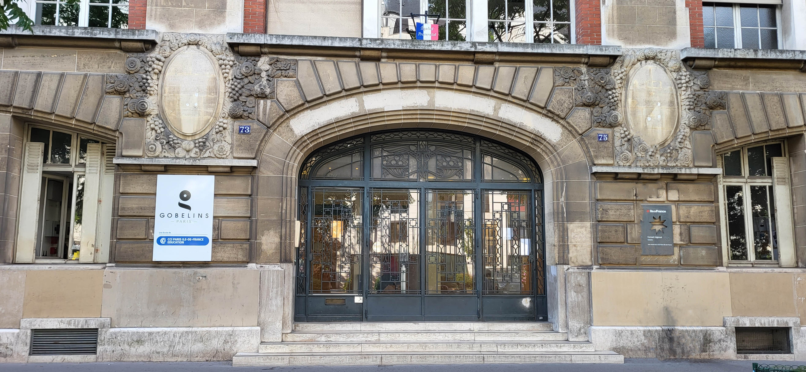
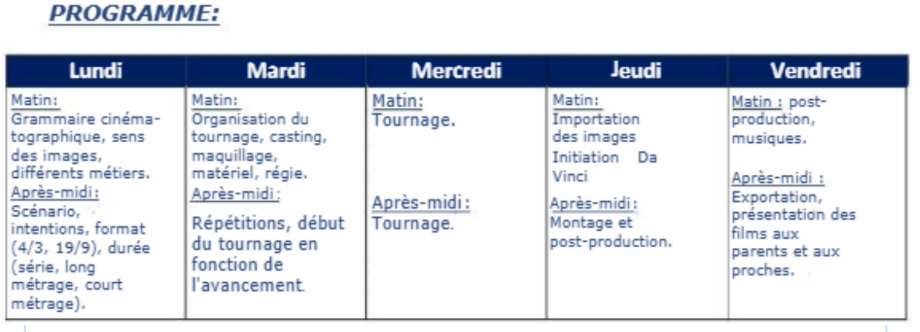
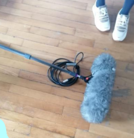
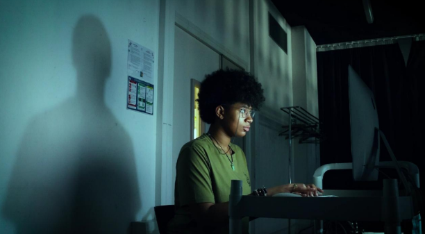
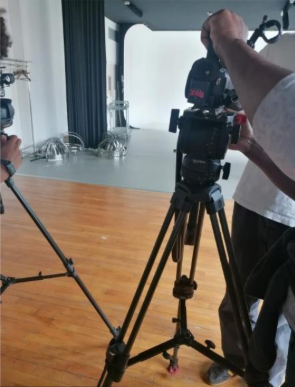

Projet École Gobelins
Mon experience de stage aux sein de l'école Gobelins.
École des Gobelins à Paris
Initiation de 30 heures à l'école des Gobelins de Paris, permettant de réaliser mon premier film qui traite de l'anxiété sociale.
ㅤ

ㅤ

Alternance des rôles
Travail en collaboration avec les autres élèves permettant de découvrir plusieurs métiers de l'audiovisuel.
-> Un film en tant que réalisatrice.
-> Un film en tant que opérateur son et lumière.
-> Deux films en tant qu'actrice.
ㅤ



Réalisation d'un court-métrage :
-> Choix du thème, du scénario, du lieu, de l'éclairage et du découpage.
-> Tournage en gérant à la fois la caméra, l'équipe technique et les acteurs.
-> Montage via DaVinci, effets spéciaux et son.
-> Travail sur les intentions du réalisateur et le pitch.
ㅤ